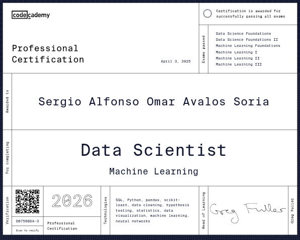
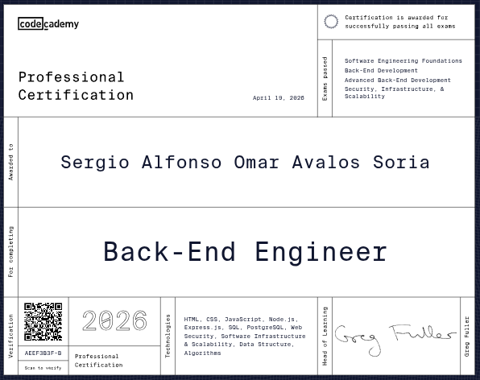
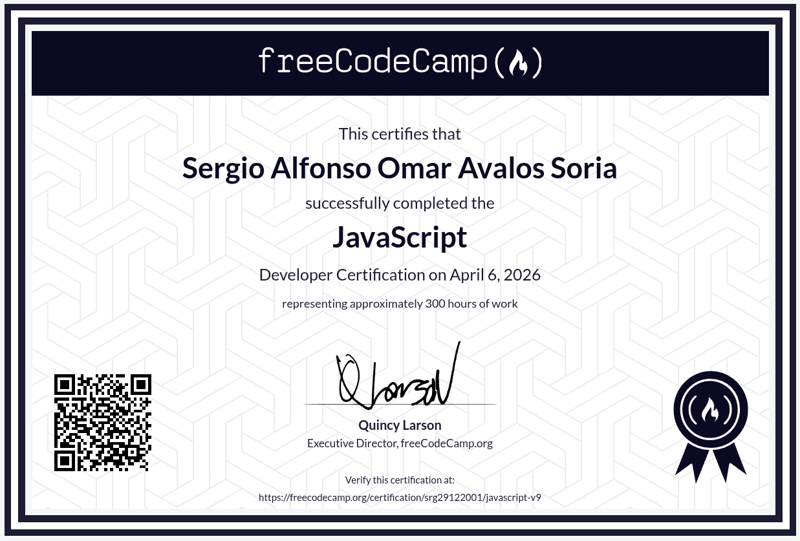
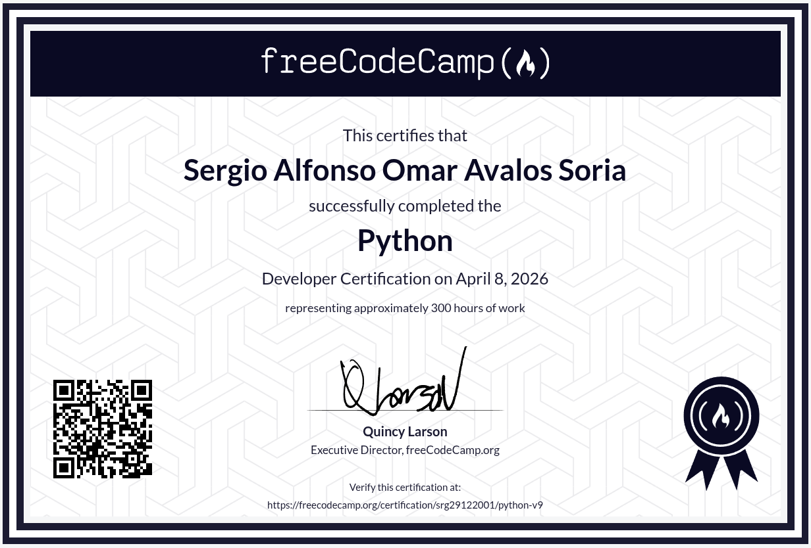
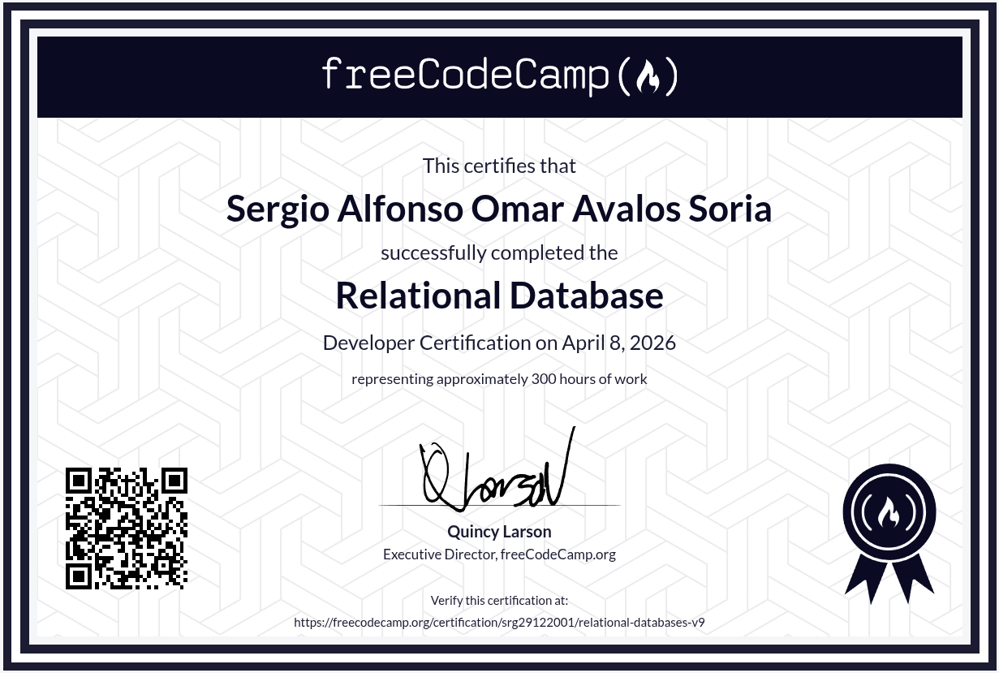
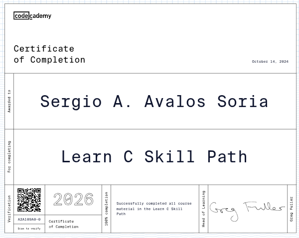
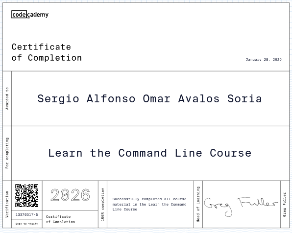
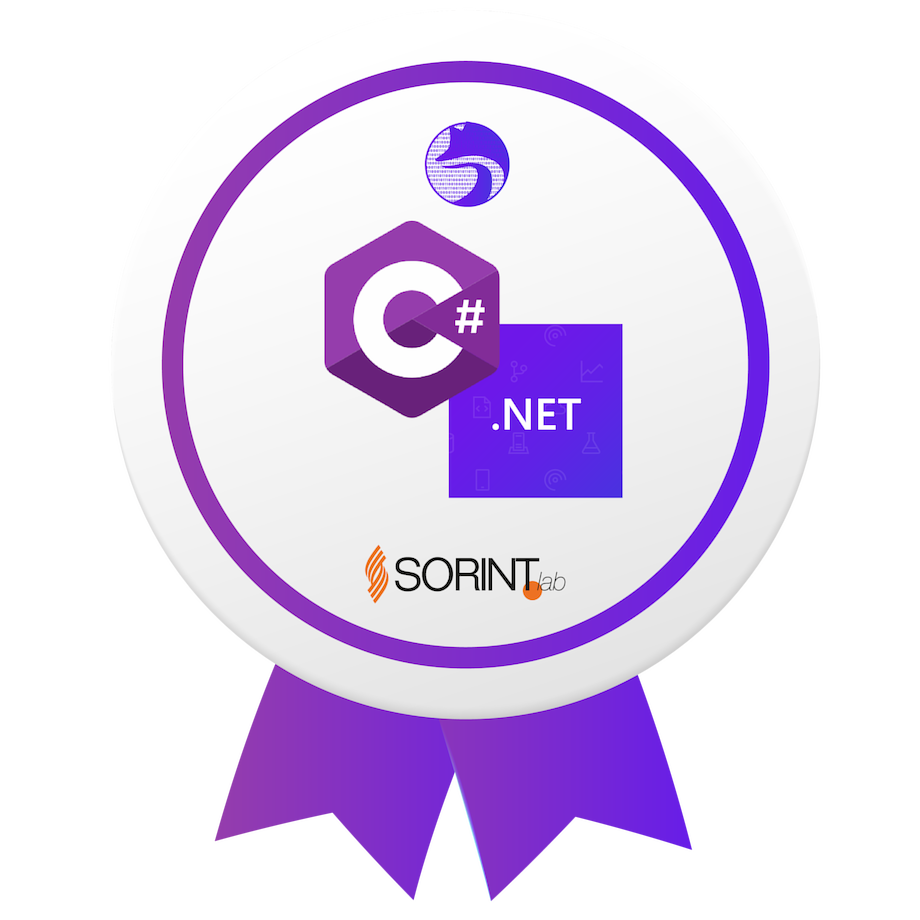
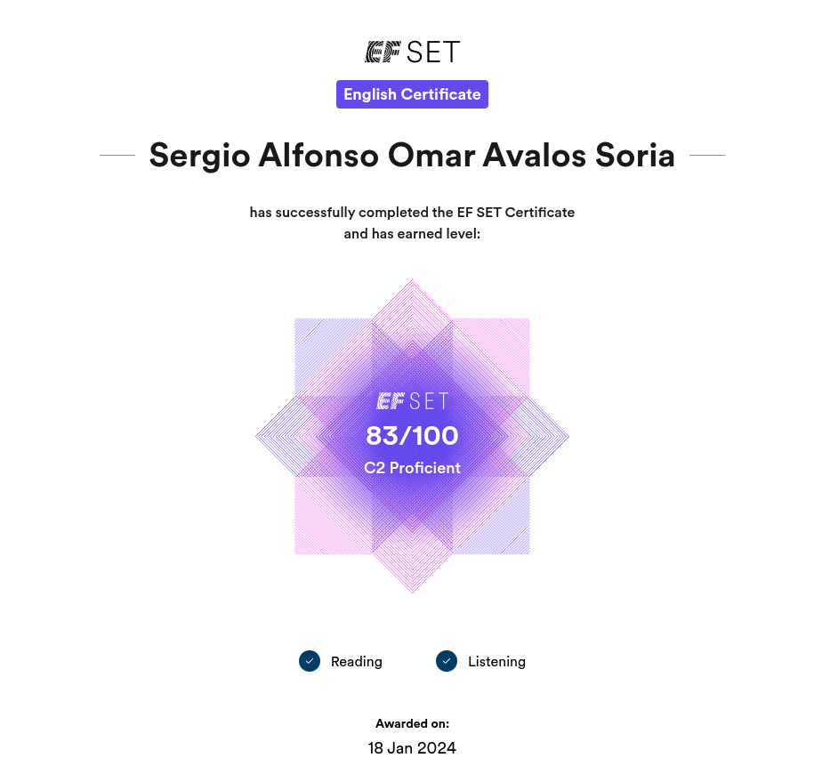

Certificazioni
Certifications

Data Science: Machine Learning
Appreso: SQL, Python, pandas, scikit-learn, data cleaning, test di ipotesi, data visualization, machine learning, reti neurali.
Learned: SQL, Python, pandas, scikit-learn, data cleaning, hypothesis testing, data visualization, machine learning, neural networks.
View Certificate Visualizza il certificato
Back-End Engineer
Appreso: HTML, CSS, JavaScript, Node.js, Express.js, SQL, PostgreSQL, Sicurezza web, Infrastruttura e scalabilità software, Struttura dati, Algoritmi
Learned: HTML, CSS, JavaScript, Node.js, Express.js, SQL, PostgreSQL, Web Security, Software Infrastructure & Scalability, Data Structure, Algorithms
View Certificate Visualizza il certificato
JavaScript
Appreso: Fondamenti JS, Gestione degli errori, Manipolazione del DOM, Strutture Dati e Algoritmi.
Learned: JS fundamentals, Error handling, DOM manipulation, Data Structures and Algorithms.
View Certificate Visualizza il certificato
Python
Appreso: Basi di Python, Dizionari e set, Gestione errori, Classi e Oggetti, Strutture Dati e Algoritmi.
Learned: Python basics, Dictionaries and sets, Error handling, Classes and Objects, Data Structures.
View Certificate Visualizza il certificato
Relational Databases (v9 & v8)
Appreso: SQL, PostgreSQL, Bash, Bash Scripting, GIT.
Learned: SQL, PostgreSQL, Bash, Bash Scripting, GIT.
View Certificate (v9) View Certificate (v8) Visualizza (v9) Visualizza (v8)
Learn C Course
Appreso: Variabili, Array, Cicli, Puntatori, Funzioni, Struct.
Learned: Variables, Arrays, Loops, Pointers, Functions, Structs.
View Certificate Visualizza il certificato
Learn the Command Line
Appreso: Navigazione e gestione del terminale Bash, GIT.
Learned: Bash terminal navigation, GIT.
View Certificate Visualizza il certificato
HackersGen Course - Introduction to C# and .NET
Appreso: Competenze base sul linguaggio C# e il framework .NET.
Learned: C# and .NET fundamentals.
View Badge Visualizza badge
EF SET English Certificate (C2 Proficient)
Certificazione attestante la padronanza della lingua inglese a livello C2.
Certification demonstrating C2 level proficiency in the English language.
View Certificate Visualizza il certificatoDiploma di maturità LICEO SCIENTIFICO OPZIONE SCIENZE APPLICATE
Diploma di Liceo Scientifico Scienze Applicate, ottenuto presso I.T. TECNOLOGICO - G. GIORGI, con votazione finale di 88/100.
High School Diploma in Applied Sciences, obtained at I.T. TECNOLOGICO - G. GIORGI, with a final grade of 88/100.
View Certificate Visualizza il diploma